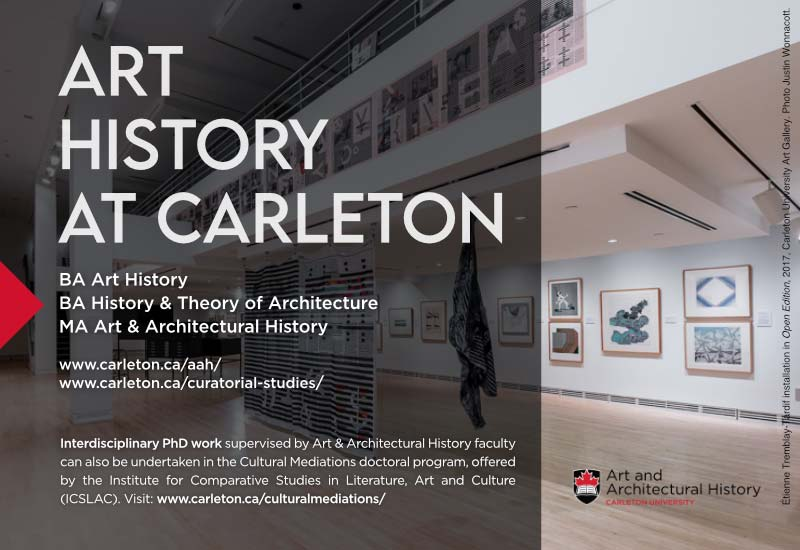
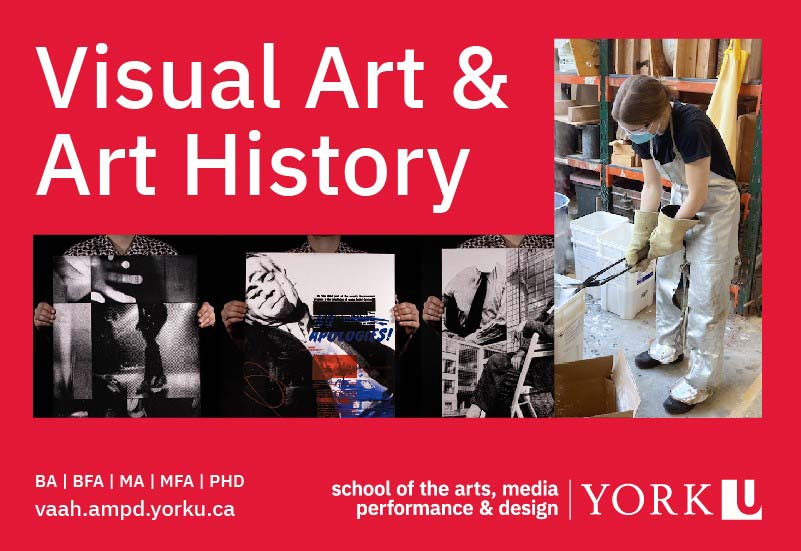
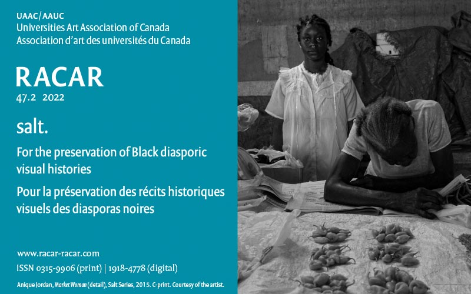

-
thursday october 27
9:30 – 10:30
Sessions A
11 – 12:30
Sessions B
13:30 – 15:00
Sessions C
15:30 – 17:00
Sessions D
advertisement
 -
friday october 28
9:00 – 10:30
Sessions E
11:00 – 12:30
Sessions F
13:30 – 15:00
Sessions G
15:30 – 17:00
Sessions H
advertisement
 -
saturday october 29
9:00 – 10:30
Sessions I
I.1 Challenges of teaching, studying, and/or curating Islamic art and architecture in Canada
I.2 Paranormal Exhibitions,
Part 1 I.3 Queer Episodes in Canadian Art
I.4 Homemaking: intersections of craft and home
I.5 Appropriation After Appropriation,
Part 1 I.6 ROUNDTABLE Rethinking Figure Drawing from Both Sides of the Easel
11:00 – 12:30
Sessions J
14:30 – 15:30
public
advertisement

in-person: university of toronto, hart house [map]
-
friday november 4
10:40 – 12:10
sessions K
12:40 – 14:10
Sessions L
14:20 – 15:50
Sessions M